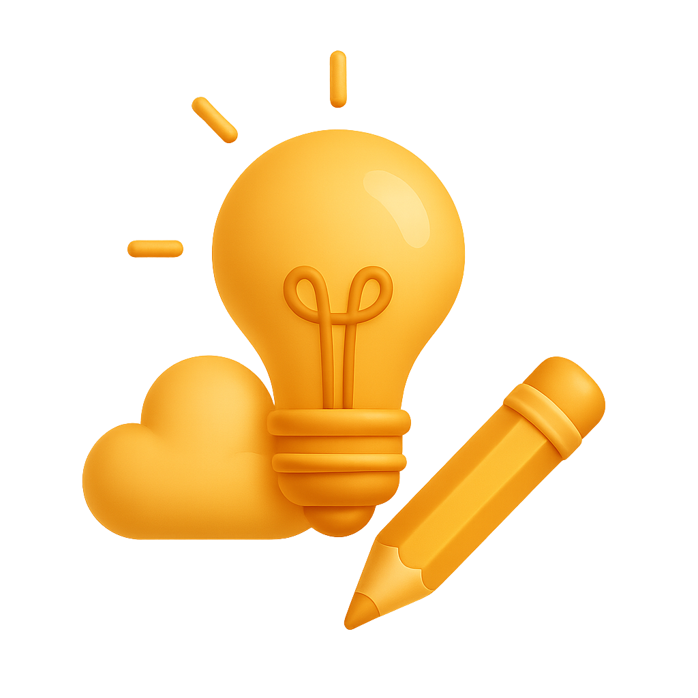
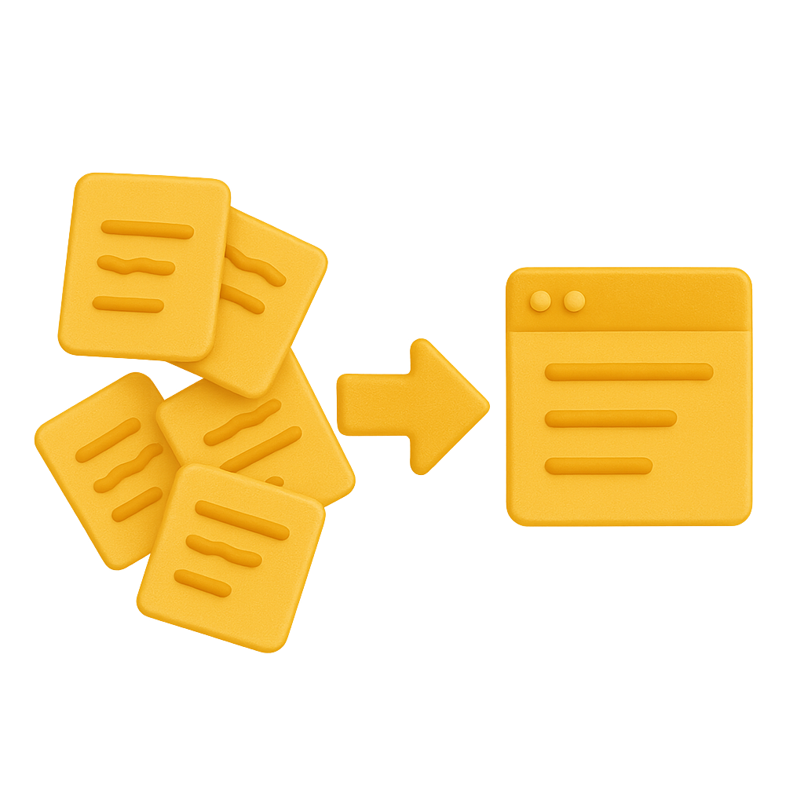
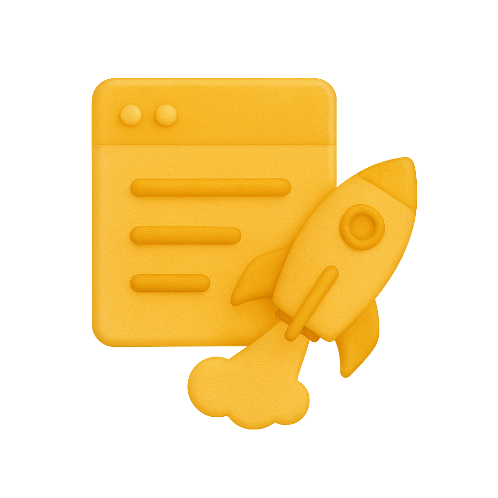

Imagine
You capture sparks everywhere—code experiments, design palettes, prompts, briefs, screenshots, research notes. They live in folders, chats, and tabs. When inspiration hits, you hunt through chaos, repeat old work, or lose the thread entirely.
“Every brilliant idea deserves a home that remembers it for you.”

Transformation
CodeMenu becomes your augmented memory. Capture anything in seconds, layer it with metadata, and surface it exactly when your flow demands it. It’s a personal snippet manager designed for makers who refuse to lose their best work.
- Capture & Store code, prompts, documentation, palettes, and media in one encrypted vault.
- Organize & Contextualize with groups, tags, graph view, and dynamic placeholders that adapt to each project.
- Recall & Reuse through semantic search, quick suggestions, abbreviations, and side-window previews that drop content directly into your tools.
- Extend & Automate using built-in utilities, runnable snippets, HTTP integrations, and custom scripts that keep your workflows glued together.

The Result
CodeMenu evolves into the always-on teammate that remembers context, surfaces answers, and keeps you shipping. Focus stays unbroken, output gets sharper, and every idea returns when you call for it.